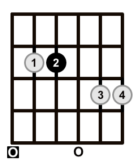

Ingrese su búsqueda
Em7
El acorde Em7 en su forma abierta, que es el más común y fácil de tocar, se construye colocando el dedo índice (1) en la quinta cuerda, traste 2, y el dedo medio (2) en la cuarta cuerda, traste 2, dejando el resto de las cuerdas al aire. Esto forma las notas E (6ª cuerda al aire), B (5ª cuerda, traste 2), D (4ª cuerda, traste 2), G (3ª cuerda al aire), B (2ª cuerda al aire) y E (1ª cuerda al aire), siguiendo la fórmula 1 - ♭3 - 5 - ♭7.
Esta forma es muy usada porque es fácil de ejecutar y suena abierta, cálida y resonante. Se encuentra en muchas canciones de géneros como folk, pop, rock y blues, y es ideal para progresiones armónicas suaves o con un toque melancólico. También es una excelente base para agregar adornos y variaciones sin perder su sonido característico.
